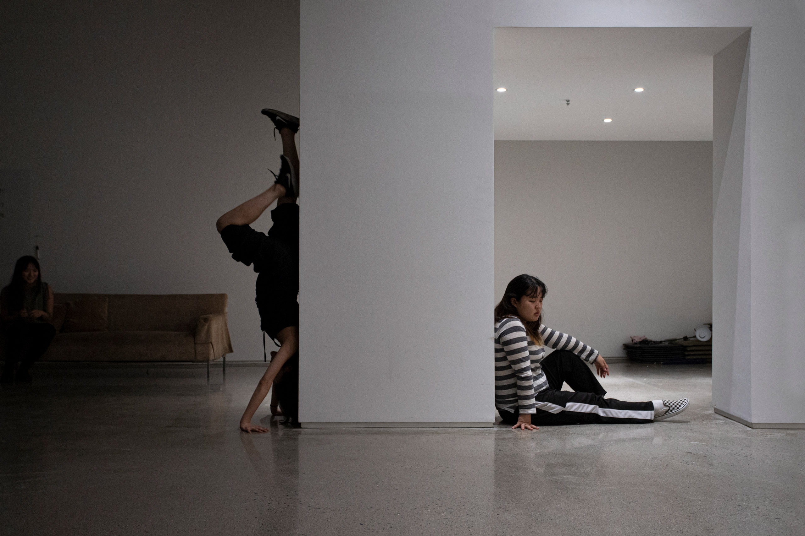

전시 보러 갈래? - 박수지와 함께 2
<6. 혹시 종교가 있으세요?
7. 기후 위기와 좋은 예술, 그리고 나쁜 예술
8. 남영의 관심사와 퍼부해 / 그녀의 성실은 재능이에요
9. 아! 퀴어....
10. 재훈과 지희의 관심사 / 전시가 끝난 후, 이게 끝인가?
6. 혹시 종교가 있으세요?
지희: 개인적으로 궁금한 부분인데 혹시 큐레이터님은 종교가 있으신가요?
박수지: 없어요.
재훈: 지희님이 수지 기획자님에게 혹시 예술이 종교시냐고 물어보려고 했었어요. (웃음)
박수지: 저에게 예술이 약간 종교적인 느낌이 있죠.
지희: 저는 교회를 가는 행위나 기도 하고 성경책으로 모임을 가지는 행위들이 제가 하는 예술적 행위와 비슷하다 생각해왔거든요.
박수지: 맞아요. 예술이라는 게 결국에는 어떤 믿음이 없이는 하기 힘든 일이죠.
현진: 어떤 믿음을 가지고 계세요?
박수지: 제가 갖고 있는 믿음은... 그러게요. 최근에는 예술의 역사 안에서도 영성에 관한 이야기가 있잖아요. 근데 이것은 어떤 하나의 파트일 뿐일 수도 있을 것 같고.
내가 갖고 있는 믿음. 예술에 관한 믿음... 죽기 전까지 알 수 없지 않을까요? 근데 그런 건 있어요. 우리는 지금 살아 있는 사람으로서 과거를 요약해서 알 수 있잖아요. 인류의 역사를 다 통틀어 봤을 때 인류가 자기가 모르는 것들을 알아보기 위해 열심히 과학도 발전시키고 예술도 발전시키고 여러 가지 학문 분야를 발전시키고 해봤는데, 그 모든 노력들 중에 가장 흥미 있는 노력이 저는 예술이라고 생각해요. 그런 인간들의 ‘애씀’에 관한 부분들.
제가 한 6개월 전쯤에 천문학자와 면역학자를 인터뷰했는데요. 결국에는 모든 과학이란 어떤 가설을 전제로 이루어지는 학문이기 때문에, 사실 그 가설의 대전제가 틀리면 자기네들의 학문도 완전한 것이 아닐 수 있다고 말씀하시더라고요. 틀릴 수 있는 가능성을 언제나 갖고 있다는 거죠. 그리고 우주를 다루는 학문 역시 무언가를 발견하면 그 발견을 통해서 다시 또 다른 가설들을 세우는 것이기 때문에 언제나 바뀔 수 있는 학문이라는 거예요.
그걸 이야기하고 싶었어요. 우리가 예술을 공부하거나, 창작하거나, 매개하는 일을 한다고 할 때도 무언가를 완전히 알기 때문에, 미술사를 완전히 통달했기 때문에 무언가를 할 수 있거나 무언가에 대해 말할 수 있는 게 아닌 거죠. 언제나 그 모름의 영역을 갖고 있는 채로 할 수밖에 없다는 거에요. 거기서 오는 그 미지의 상태에 관한 것을 일종의 믿음이라고 불러볼 수도 있을 것 같아요.
남영: 그럼 그 미지의 상태에 대한 믿음이 어떤 때에는 불안으로 다가오지 않으셨어요?
박수지, 빨대를 입에 물고 완고하게 고개를 젓는다.
지희: 되게 완고한 믿음이네요.
재훈: 나름 이렇게 무게 있는 내용을, 여유롭게 빨대를 빠시면서 말씀하시니까 정말 믿음이 느껴져요. 공고한 믿음. (웃음)
박수지: 그래요?
현진: 여유! (웃음)
7. 기후 위기와 좋은 예술, 그리고 나쁜 예술
박수지: 혹시 여러분들은 기후 위기에 대해서 어떻게 생각해요?
재훈: 스스로 깊게 생각해본 적은 없는데요. 예전에 다른 분이랑 기후 위기에 대해 한번 이야기 나눠본 적은 있어요. 기후 위기라는 문제는 한 개인이 뭘 어떻게 한다고 해도 그것의 벌어짐 자체에는 영향을 미칠 수가 없는 규모의 문제잖아요. 그러한 규모의 무언가에 대해서 나는 어떠한 표정을 지어야 하는가, 무엇을 해야 되는가. 이런 이야기였는데요. 그 이야기에 대해 지금 다시 생각을 해보면... 저마다 다양한 태도가 있는 것 같아요.
그레타 툰베리처럼 적극적으로 나서서 이야기를 할 수도 있고, 같이 이야기 나눴던 분은 이 문제를 자신의 졸업 논문에 쓸 것 같다고 말씀하셨거든요. 그런 식으로 이 문제에 대해 적극적으로 사유하는 식으로 접근할 수도 있겠죠. 또 누군가는 비건식을 하기도 하고 환경 운동을 하기도 하는데, 저는 그런 사람들의 이야기를 듣기는 하지만 실제로 무언가를 적극적으로 하지는 않거든요? 그냥 딱 이 정도로만 반응하는 것 같아요. ‘공감하면 연대한다’라는 말처럼 각자가 공감하는 만큼 행동하되 자신을 너무 희생하지 않는 선에서 행동하는 게 그냥.. 자연스럽죠.
현진: 얼마 전에 엄청 더웠던 날이 있었어요. 그날 남영이랑 실기실에서 에어컨을 키며 ‘근데 우리가 지금 이렇게 덥고 얼마 후에는 얼마나 더 더워질지도 모르고, 진짜 우리의 생존이 달려 있는데도 불구하고 무언가를 만들어내는 게 무슨 의미일까.’ 이런 얘기를 한 적이 있었어요. 사실 안 만드는 게, 가장 적게 만드는 게 환경적으로 가장 좋을텐데.. 이런 생각이 들더라고요..
남영: 텀블러를 사용하고, 스파 브랜드의 옷을 덜 사는 등 일상생활에서 환경을 위한 실천을 조금씩 하더라도 작업을 할 때 재료를 사면서 이게 맞나... 싶은 생각이 들 때가 있어요. 어릴 때 교과서에서 배웠던 기후 위기를 이제는 슬슬 몸으로 체감할 때마다 무서워요.
현진: 그리고 작품의 보관 문제도 있죠. 내가 만든 것들이 다시 쓰레기가 될 수도 있는 운명을 가지고 있는데도 불구하고 또다시 재료를 사서 뭔가를 만드는 이런 과정 자체가 지금 내가 몸으로 느끼는 이 기후의 변화와는 안 맞아들어가고 있다는 경험을 계속하니까. ‘만드는 행위를 내가 어떻게 바라봐야 하지?’ 라는 질문이 있어요.
박수지: 그리고 이런 문제를 가장 반성적으로 민감하게 느끼는 사람들이 예술계에 있는 분들인 것 같기도 해요. 어떻게 보면 여느 다른 분야들 보다 더. 하지만 저는 어떤 정신 승리를 했냐면, 예술이 인류가 일구어낸 것들 중 정신적으로 가장 흥미로운 산물일 수 있잖아요. 그 가치를 우리가 존중할 수 있다면 예술 작품을 만드는 것이 너무 중요한 일이 되고요.
그러니까 좋은 예술을 하면 돼요! 좋은 예술을 하고 좋은 전시를 만들면 된다!
재훈: 진짜 엄청난 승리네요. 👍
박수지: 네. 엄청난 정신 승리죠. 근데 저도 근본적으로 소비나 생산은 다 줄여야 된다고 생각해요. 돌아가는 상황을 봤을 때 가망이 없는 이야기 같아서 약간 자포자기하는 마음도 드는 때가 있는 것 같아요.
남영: 아까 좋은 예술에 대해 말씀하셨는데 그러면 나쁜 작업도 있다고 생각하세요?
박수지: 나쁜 작업이 있다고 생각하냐고요, 음... 있다고 생각해요.
현진: 나쁜 작업이라고 판단할 수 있는 기준들이 있나요?
박수지: 최근에 본 전시들을 떠올리면서 생각을 해보자면, 지금 ‘유행’하는 ‘주제’를 ‘설명’하는 작업이 나쁜 작업이라고 볼 수 있죠.
남영: 별로다가 아니라 ‘나쁘다’인 이유가 있나요?
박수지: 그것 자체가 나쁘다기보다는 그것이 미치는 영향이 나쁜 거죠. 그런 작업들이 더 나은 환경에서 보여질수록 누군가는 ‘아 저것이 작업인가 보다. 예술은 저렇게 해야 되나 보다.’ 이런 생각을 가질 수도 있잖아요? 그런 영향들이 나쁘다고 생각해요.
남영: 아하~ 이해갔어요.
박수지: 그렇기 때문에 정말 매개자의 책임이 점점 커진다고 느끼기도 해요. 어떤 작업을 매개할 것인가. 그런데 좋은 작업과 나쁜 작업이라는 구분이 다 한낱 개인의 생각에 불과할 수 있잖아요. 그럼에도 불구하고 난 나쁘다고 생각하는데 이걸 어떻게 하면 좋지? (웃음)
재훈: 아까 ‘기후 위기라는 규모의 문제에 대해서 개인이 동일한 규모의 대답을 할 수 있는가?’ 라고 질문했을 때 그럴 수 없으니까 제가 다양한 입장이 있다고 말했는데요. 같은 질문에 대해서 개인이 예술을 통해 그러한 규모의 답변을 할 수 있다고 믿는 사람들이 설명적인 작업을 하는 것 같아요. ‘내가 만드는 작품과 전시가 이렇게나 중요하다. 그러니까 나의 이 주장을 받아들여라!’ 와 같은 뉘앙스를 뿜는 작업이나 활동 방식을 보다 보면 느낍니다.
박수지: 맞아요. 그런 작업들이 대체로 어떤 교조주의적이거나 계몽적인 성격도 갖고 있죠. 그런데 계몽은 ‘이렇게 생각하셔야 맞는 생각입니다’ 라고 누가 알려줘서 계몽되는 게 아니죠. 아까 했던 얘기랑 계속 겹치는데요. 내가 내 눈을 가지려는 노력을 해야 자기 스스로 셀프 계몽이 되는 거죠. 그러니까 그런 (교조적인) 작업들이 나쁘다고 생각되는 거예요.
남영님은 나쁜 작업이 있다고 생각해요?
남영: 네, 저는 나쁜 작업이 있다고 생각을 해요. 돌이켜 생각해 보니까 ‘작업이 나쁘다’는 말을 ‘작업이 사람들에게 주는 영향이 나쁘다’는 의미로 생각하고 있었던 것 같아요.
박수지: 어떤 작업이 나쁜 영향을 주고 있다고 생각해요?
남영: 이게 작업 자체가 나쁘다기보다 박서보를 주축으로 하는 홍대 출신 모더니즘 평면 회화를 구사하고 있는 사람들이 대부분 정교수들인데, 너무나 빠른 속도로 바뀌어가는 현장과는 달리 학과의 커리큘럼을 하나도 바꾸려 하지 않거든요. 그들의 수업에서 영상이나 퍼포먼스 등 다른 매체를 했을 때 제대로 된 피드백을 받지 못해 소외되는 기분이 들어요.
박수지: 진짜 이건 실질적인 문제구나.
남영: 그렇게 느껴지는 것 같아요. 저한텐
박수지: 지겹지 않나? 예술은 사라지고 그냥 정치 싸움만 남은 거잖아요.
남영: 맞아요.
박수지: 지희님은 나쁜 작업이 있다고 생각해요?
지희: 이거다! 라고 내뱉을 수 없지만 어렴풋이는 있어요. 어쨌든 작품이든 전시든 관객에게 읽히고 보이게 되면서 물리적으로 영향이 가기 때문에 그런 점에 있어서는 분명히 나쁘다 라고 할 수 있는 부분이 있죠... 문장으로 얘기하기엔 애매하지만.
남영: 저는 그것도 있는 것 같아요. 권력에 가담한 작업들?
박수지: 권력에 가담하는 작업.. 너무 별로인데요? 저는 쳐다보지도 않을 것 같아요.
남영: 누구라고 정확히 이야기할 수는 없지만.. 어떤 것을 나란히 보는 게 아니라 위계를 만들고 습관화해서 예술로 가져올 때 때 그런 생각이 드는 것 같아요.
재훈: 그런데 사실 이렇게 언어로 말할 때는 우리가 무엇이 나쁘고 무엇이 좋은지에 대해서 이미 다 알고 있는 것 같은데요. 그 기준들을 실제 전시나 작품, 사람에게 적용해서 이야기하는 문화는 활발하지 않다고 생각해요. 방금 이야기했던 나쁜 작업에 대한 기준들을 통해 전시 《충녀》를 생각해볼까요?
예를 들어 이 전시를 김기영 감독의 영화 ‘충녀’와 김기영 감독에 대한 최근의 재평가 및 관심을 관객 몰이를 위해 수단화한 전시로 볼 수도 있지 않을까요? 아니면 현재 한국 미술계에서 이야기되고 있는 페미니즘 미술에 대한 관심을 본 전시가 입으려는 목적으로 기획됐다! 라는 식으로 나쁘게 볼 수도 있잖아요.
박수지: 그렇게 봐요?
재훈: 아니요.
박수지: 나도 그렇게 안 봐요. (일동 웃음)
재훈: 이 부분에서 아까 말씀하신 좁은 커뮤니티의 효과가 개입되지 않았을까 싶어요. 저는 본 전시를 주최한 개오망 크리에이티브 스튜디오나 이 전시 공간에 대해서는 아는 게 거의 없었거든요. 사전 정보가 없었는데도 이 전시를 보러 가자고 여러분들께 제안했던 이유는 제가 참여 작가 중 박민희 작가와 장파 작가를 팔로우하고 있었기 때문이에요. 어떤 작가를 팔로우한다는 건 그 사람들의 작가적 여정을 내가 지켜보고 있는 게 나한테 도움이 되니까 그런 것이잖아요. 그런 점에서 그들에 대한 일종의 믿음이 있는 거고요. 제가 이 전시를 나쁘게 보지 않는 이유는 기존의 그 믿음 때문 아닐까요?
작업 자체가 나쁠 수는 없고, 그 작업을 작가가 어떻게 부리고 활용하는지가 중요한 파트라고 생각해요. 예를 들어 박서보가 작품만 만들고 다른 대외적인 활동을 아무것도 하지 않았다면 정말 좋은 작가로 기억됐을 수도 있겠죠.
그런 면에서 내가 이미 본 전시의 구성원을 믿고 있기 때문에, 이 전시 자체에 대해서는 잘 모르지만 그 믿는 지점에서 이미 먹고 들어가는 것 같아요. 이게 아까 말했던 ‘우리가 정말 다양한 사람을 만날 수 있는가? 나와 정말 의견이 다른 사람과 내가 만날 수 있는가?’ 그런 생각으로 이어지기도 하고요.
지희: 나쁜 전시에 대해서 얘기하는 게 되게 중요하겠네요. ‘나쁘다’라는 것을 기준으로 삼아서 좋은 전시, 좋은 작품이 있을 테고. 기준이 다 다르겠지만 인지하는 게 도움이 될 것 같아요
재훈: 완전 저질스러운 폭력의 경우, 우리 모두 그것이 나쁨을 알고 욕하잖아요. 하지만 (1) 완전 나쁨과 (2) 보통, 그리고 (3) 좋음이 있다고 했을 때 공적인 자리에서 (1)과 (2) 사이 영역에 대해서는 사람들이 거의 아무 말도 하지 않죠. 따로 지인들끼리만 이야기하거나.
박수지: 그냥 뒷담화. 진짜 재미없어.
재훈: 그래서 이 ‘전시 보러 갈래?’가 어떻게 보면 뒷담화를 공개적으로 하는 프로젝트에요.
박수지: 그런 것이었군. 공개의 탈을 쓴 뒷담화!
남영: 저희끼리 그 얘기를 했어요. 이건 공적인 뒷담화이다!
지희: 공적인 뒷담화가 나쁜 얘기만 나오는 것이 아니라 우리가 공통으로 좋아하는 한 사람에 대해 파헤치고 얘기를 나누는 자리이기도 해서 되게 재밌고 즐거웠어요.
박수지: 재미있었다니 다행이에요. 현진님은 아까 요즘에 무엇에 관심 있으신지 들어봤고 남영님도 이야기해 줄 수 있나요?
8. 남영의 관심사와 퍼부해 / 그녀의 성실은 재능이에요
남영: 저도 그때 현진이랑 같이 했던 그 모임
박수지: 6명의 퍼포먼스 그룹!

사진: 재훈
남영: 이름하야 '퍼부해'에요.
박수지: 뭐요?
남영, 현진: 퍼부해!
현진: 저희가 팀 이름을 정할 때 냉장고를 부탁해를 생각했는데 냉장고에 있는 음식들을 취합해서 제한된 시간 안에 음식을 만드는 것처럼 우리도 퍼포먼스를 부탁해? 퍼부해? 해서 만들었어요. (웃음)
기록영상: 하지민
남영: 작년에 퍼부해 훈련을 했을 때 몸을 쓰면서 관객들을 만나는 것이 재밌었어요. 퍼포먼스 훈련 이후에는 행위로 인해 오브제가 다른 모양새가 되는 것을 주로 만들고 있어요. 이러한 과정 중에 최근에는 오브제가 몸을 만나면 트랜스포밍 되는 것을 만들고 있어요. 조금 더 큰 변화를 시도하는 중이에요. 기능을 가지며 다른 형태의 몸을 가질 수 있는 것들. 이 사이에서 제 몸이 드러났다가 드러나지 않다가 하고 있고요.
박수지: 그때도 남영님의 신체를 사용해서 트랜스포밍하는 무언가를 만들었나요?
남영: 각 시기에 따라 제가 얻고자 했거나 얻은 것들이 다른데요. 퍼포먼스 훈련을 하면서 알게 된 것은 제게 공격적인 성향이 없지 않아 있거든요. 저한테 그런 것들이 작업으로 드러나는 것 같기도 해요. 그런 성향을 인지하면서 작년 겨울에는 행위에 따라 형태가 변하는 오브제로 퍼포먼스 작업을 했었어요. 학교에서 오픈 스튜디오를 했는데, 저는 실기실에서 이 작업을 보여줄 환경이 되지 않았어요. 그래서 작업하는 몇몇 친구들과 함께 학교의 다른 공간을 빌려 퍼포먼스와 상영회를 했는데 이름하야 한파티거든요.
박수지: 이름들을 굉장히 쉽게 쉽게 짓는다. 퍼부해, 한파티 (웃음) 괜찮은데요?
재훈: 듣자마자 딱딱 꽂히네요.
남영: 그때 퍼포먼스에서 관객들 발 옆에 분필로 선을 그어서 관객들을 묶거나, 고개를 들어 관객들을 찬찬히 주시하는 등 관객과 함께하는 것에 대한 짜릿했던 경험이 있어요.
현진: 남영은 관객을 통제하고 싶어 하지 않았어요?
남영: 네, 윈드밀 《부트 캠프》에서 관객에 대한 실험을 했었죠. 관객을 타고 들어가고 싶다. 되게 재밌는 경험 중의 하나였던 게, 똑같은 복도여도 제가 어떤 행위를 하느냐에 따라서 저와 관객의 거리가 달라진다는 점이었어요. 관객들이 저를 멀리서 보거나 헨젤과 그레텔처럼 조금씩 조금씩 따라왔던 그런 경험들이 진짜 재미있었어요
현진: ‘관객이 내 표정이나 작은 손짓을 봤으면 좋겠어’라고 하면 소근소근 얘기해야 그걸 들으려고 관객들이 가까이 오고 좀 내 몸을 작게 멀리서 봤으면 좋겠다 해서 큰 소리로 얘기하면 멀리 떨어져 있고. 그런 게 남영이 말하는 통제였나요?
남영: 거기서 많이 배웠었던 것 같아요.
박수지: 너무 멋지네요. 진짜. 다음 퍼부해의 어떤 프로그램이 계획이 있으시면 초대 좀 해주세요.
남영: 아까 현진이 말했던 것처럼 이번 겨울에 퍼포먼스 훈련 기록물들을 책이나 웹사이트의 방식으로 정리할 계획을 하고 있어요.
재훈: 정리 다 되면 한번 보고 싶네요.
남영: 그때 당시에 퍼부해 친구들과 함께 고민했던 지점이 퍼포먼스와 기록에 대한 부분이었어요. 퍼포먼스 작업은 주로 영상이나 사진으로 기록되는데 ‘이 기록이 작업을 대신해서 말할 수 있을까?’ 미심쩍더라고요. 그래서 퍼포먼스 훈련을 할 때는 최대한 현장에 집중하며 동시 사진이나 영상을 찍지 않고 하루 뒤에 글, 그림 등 다양한 매체로 기록했었어요.
박수지: 미술 안에서의 퍼포먼스나 퍼포먼스 도큐멘테이션 혹은 퍼포먼스를 영상화시키는 작업. 이런 작업들은 되게 여러 가지로 나뉘죠. 어떤 작업은 영상 자체가 퍼포먼스에 아주 필수적인 방법인 반면 어떤 작업에서는 단순 기록만을 위한 것일 뿐이고.
재훈: 그런 의미에서 오민 작가님을 옆에서 보시면 어때요? 책을 되게 많이 내시잖아요.
박수지: 오민 작가님. 정말 제가 본 사람 중에 가장 성실하세요. 그녀의 성실은 재능이에요.
현진: 어떤 정도여야 재능이라고 말할 수 있는 건가요? (웃음)
박수지: 이걸 어떻게 얘기해야 되나.
재훈: 막 새벽 3시에 일어나시나요?
박수지: 아니요. 그런 건 아닌데 어떤 꾸준함이 있으신 것 같아요. 자기가 만들어 놓은 계획이나 목표를 차근차근히, 한 번에 뭘 하려고 하지 않고 자기 호흡을 밟아가면서 하세요. 공부를 하든 작업을 하든 촬영 계획을 하든 지원서를 쓰든 뭘 하든 간에 항상 언제나 그런 페이스를 유지하세요.
9. *아! 퀴어....
현진: 다른 질문인데요. 기획자님의 소개 글에는 퀴어에 대해서도 많이 언급되는데, 말씀하시는 그 퀴어가 어떤 섹슈얼리티로서의 퀴어성은 아니라고 생각해서요. 퀴어를 어떤 맥락으로 말씀하고 계시는 건지 궁금했어요. 제가 느끼기로는 사랑, 우정, 종교, 퀴어 네 단어로 분류는 되어있지만, 이것들은 단어로 분리함으로써 분리되는 것이지 이전에는 어떤 총체이지 않을까 생각했거든요.
박수지: 맞아요. 방금 해주신 말씀이 맞고 제가 처음에 퀴어에 관심을 가졌을 때 그때는 어떤 퀴어 개념의 확장성을 당연히 생각했던 것 같아요. 맨 처음 관심 가졌던 건 2015년, 16년 이때쯤이었어요. 그때 당시 논문을 퀴어 개념의 확장성에 관해서 써보려고 했다가 교수님께 지적을 듣기도 했었어요. ‘개념의 가족 유사성을 다 완전히 무시할 수 없다.’ ‘아무리 확장을 한다고 해도 학술적으로는 개념의 계보를 충분히 가진 채로 확장을 시켜야지 갑자기 사회적 매개의 모든 것이 다 퀴어적일 수 있다는 식으로 확장시킬 수는 없다.’ 그렇지만 제가 원래 관심이 있었던 퀴어적인 성질은 그때랑 크게 달라지지 않았어요.
기존에 어떤 기준이나 위계가 있는 사회이든 간에 소위 불온한 상태는 역사적으로 시대적으로 사회나 지역에 따라서 다 달라지는 거잖아요. 이 삼 년 전만 해도 공중파 방송에서 레즈비언, 게이 프로그램이 나올 수 없었잖아요. 임성한이라는 드라마 작가 아세요?
지희: 어제 봤어요.
박수지: <아씨 두리안>이라는 새로운 드라마를 내셨거든요. 그분이 『암세포도 생명』이라는 책을 쓰기도 했는데, 굉장히 특이한 분이세요. 한국 막장 드라마의 효시 같은 분이죠. <아씨 두리안>이라는 드라마에서는 며느리가 시어머니를 사랑하는 내용이 들어 있더라고요.
며느리가 “어머니 저는 어머니를 여자로서 사랑해요. 어머니한테 안기고 싶어요.” 막 그런 이야기를 하는 장면을 클립으로 봤어요. 어머니는 70대고 며느리는 50대인 상황으로 나와요. 물론 혐오와 차별은 아직도 만연하지만 이런 내용이 TV 드라마에서 방영될 정도면 어쨌든 지형이 바뀌어 가고 있다고 생각해요. 그런 것처럼 퀴어에 관한 개념이나 성질도 바뀔 수밖에 없는 것 같고요. 그나저나 요즘에 퀴어 작업 너무 많지 않아요?
남영: 그거에 대해서 어떻게 생각하세요?
박수지: 뭐랄까... 주제만 남은 것 같아요. 정체성만 남았다. 때로는 젠더 정체성이 오히려 작업을 너무 카테고라이징하니까 예술이 가지고 있는 본연의 접속 가능성 있잖아요. 내가 a를 봤는데 a를 보고 누구는 커피를 생각할 수도 있고 누구는 나무를 생각할 수도 있는 그 가능성을 배제하고 ‘퀴어 정체성’만 남아 있는 작업이 너무 많은 것 같아요. 그래서 ‘아... 피곤하다.’ 라는 생각을 가지고 있습니다.
지희: 저는 그런 퀴어에 대한 작품을 볼 때 저의 (경우) 당사자성이 없는 사람으로서 작품을 봐야 되는데 그거를 일종의.. 직설적으로 말하자면 이미 포장되어 온 상태에서 경계를 만든다면, 제가 개입할 수 있는 여지를 다 막는 느낌이에요.
박수지: 그러니까 ‘여기서부터 선 넘는 질문하면 폭력’ 이렇게 경계가 생기는 거죠.
지희: 나의 관심이 혐오와 폭력으로 해석될 거라고 생각하니까, 더 다가가기도 어렵다라고 느껴지는 부분도 있는 것 같아요.
재훈: 그것에 대한 제 심정은, 그런 폐쇄성이 있잖아요. 방금 지희님이 말씀하신 것처럼 내가 당신에게 관심을 가지려고 하는 게 엄청 특별하게 공격하는 것도, 공격적인 생각도 아닌 것 같은데 그렇게 폭력임! 이라고 말하게 되는 그런 극단적인 폐쇄성 혹은 무조건적인 폐쇄성은 논외로 치더라도.
그러니까 50대 며느리가 70대 시어머니한테 사랑의 감정을 느꼈어요. 내가 느껴버렸어요. 이거 어떻게 할 거야. 이건 어쩔 수 없는 거죠. 느껴버린 건 어쩔 수 없는 거고, 이 느낌을 내 자신의 일부로서 생각하고 다른 사람들에게 공표할지가 이제 그 다음의 문제일 텐데요. 그 심정이나 맥락을 모르는 사람들은 너 제정신이야? 너 왜 그래? 어떻게 며느리가 시어머니에게 사랑의 감정을 느낄 수가 있어? 이렇게 매도한단 말이죠? 마치 다른 정치색 성향의 사람을 보는 것처럼. 그런데 사실 그 50대 며느리가 한 일은 그냥 자기가 느낀 감정에 대해서 솔직한 것뿐이란 말이에요.
박수지: 그 드라마 봤어요? 방금 재훈님이 말씀하신 것과 똑같은 대사가 나오거든요. 시어어미는 “너 제정신이야?” 하고 며느리는 “저는 그냥 제 심정을 말하는 것뿐이에요.” 이렇게 답변하는데... 혹시 각본가세요? (웃음)
재훈: 그러니까 내가 느낀 이 심정에 대해서 더 잘 알고 싶어서 퀴어 관련한 무언가를 찾아다니고 헤매는 건데, 그러면 당연히 어느 정도 폐쇄적인 지식이나 커뮤니티를 찾고 싶지 않을까요? 내 심정을 긍정할 수 있는 길로 가기 위해 그 목표에 도움 되는 언어와 관점을 먹고 싶은 거니까요. 근데 이걸 다른 측에서 이거 너무 폐쇄적이지 않냐? 하고 모든 걸 퀴어로 읽으려 한다면, 이미 자신을 공고한 퀴어로 정체화하지 않은 중간에 있는 사람들은 되게 난처하거든요. 퀴어 개념을 그렇게 확장해서 생각하면 그 개념을 통해 자신의 존재를 긍정하고 싶어 했던 그 사람은 먹을 수 있는 언어가 없어지고 힘이 빠져요.
현진: 비슷한 느낌을 아핏차퐁 감독의 <열대병>이라는 영화에서 느꼈었어요. 주인공으로 두 남자가 나오는데 그 두 사람은 커플이기도 하고 친구이기도 하죠. 근데 그 관계는 친구, 동료 간의 사랑 혹은 연인 간의 사랑처럼 이분법적으로 분리될 수 없는 형태를 가지고 있는데 그것을 ‘이건 연인의 사랑이야’, ‘아니 우정이야’라고 명명을 해버리는 순간 태초부터 분리되어 있는 것처럼 여기게 되는 것 같아요. 그런데 이 영화에서는 그러한 정의 이전, 분리할 수 없는 상태를 그대로 봐주거든요. 그것이 기억에 남아요.
박수지: 사실 따지고 보면 정말 굳이 혐오할 필요가 없는데, 그렇죠? 이상해요. 이해가 안 돼. 또 한편으로는 퀴어의 정체성 안에 계속 세부화 시키는 방법으로, 카테고리화하는 방법으로 접근하면 다시 또 특정 카테고리 안에 갇힌다는 그 함정. 그래서 모든 걸 다 외부화시키고 다시금 고립된다는 그 함정... 적어도 작품은 이 함정을 반복하지 말아야 하지 않을까...
지희: 처음 (저희가 대화를 시작할 때) 문학을 상위로 놓는다는 이유에서, 언어가 가진 힘이 강력하다고 보는데 이게 그런 맥락에서 동일하게 분류가 되는 것 같아요. 언어는 계속 경계를 만들어 가는 역할을 하기 때문에. 조심하게 되면서도 그 힘(언어가 가진 힘)을 무시할 수는 없으니까.
박수지: 맞아요. 그래서 정말 우리가 익히 아는 유명한 여성 원로 작가님들 만나서 이야기하면 본인이 1세대 페미니즘 작가로 알려지고 카테고리화 되는 것에 대해서 거부감을 보이기도 하세요. 나는 여성주의에 헌신하기 위해서 작업을 하고 있는 것이 아니다. 나는 나의 작업 세계를 만들어 가고 있고 거기서 여성주의적인 성격을 읽을 수 있는 것이지, 그것을 위한 작업을 한 적은 없다.
그리고 그런 분들이 대체로 처음에 작업을 시작하셨을 때, 어머니를 그린다거나 어머니를 조각한다거나 어머니에 관한 작업을 많이 하셨던 걸 볼 수 있는데요. 당연히 그때 당시에 자신이 겪었던 실존에 관한 반응 같은 것이고, 어떤 주장이나 목적을 가지기 위해서 했던 선택은 아니라고 회고하는 거죠.
10. 재훈과 지희의 관심사 / 전시가 끝난 후, 이게 끝인가?
박수지: 그러면 이제 재훈님의 관심사를 들어볼까요.
재훈: 관심사가 있는데, 아직 한창 만드는 중이라..
현진: 이전에 뭘 했는지 같은 것은요?
재훈: 저는 모임을 하면 친구들이랑 사진을 찍습니다. (핸드폰으로 사진을 보여줌)
박수지: 오! 다들 표정이 굉장히 굳어 있네요.
재훈: 이 친구들이 친한 친구들이고요.
박수지: 전혀 친함을 느낄 수 없어.
재훈: 이따 저희도 같이 찍을 건데 이건 작업이 아니고요. 제가 추억 쌓고 싶어서 하는 거예요.
박수지: 계속 이렇게 사람들과 만나서 이야기 나누고 생각 듣고 하는 걸 좋아하시나 봐요. 딱히 그런 건 아닌가?
재훈: 그렇죠. 네, 저는. 어. 저는...
박수지: 저는 괜찮아요. 재훈 님이 괜찮다면 이야기하시고, 꼭 얘기 안 해줘도 돼요.
재훈: 네, 그럼 저는 다음 기회에.
박수지: 알았어요. 이 ‘전시 보러 갈래?’ 는 계속 아카이브를 진행하실 계획인가요?
재훈: 그렇습니다.
박수지: 네, 그럼 지희님의 관심사를 들어봐야겠다. 재훈님은 다음에 얘기해주신다면서 모임 사진을 한 장 보여주었죠.
지희: 저는 학교에서 이런 질문을 들으면 대학원 내에서는 학술적인 관심사 이런 쪽으로 대답을 해야 되는데. 그래도 얘기를 하자면 ’움직이는 것‘들에 관심이 많아요. 근데 그것을 넓은 범위로 생각하고 있어요. 진짜 인간 그 자체일 수도 있고, 생태일 수도 있고 그런 것들에 관심을 두면서 그들 간에 접촉에도 관심이 많아요.
박수지: 접촉 (강조)
지희: 관객성도 그 중에 하나고.
박수지: 그렇겠네요.
지희: 최근 관심사는 작가들이 사용하는 문법이나 미술의 어법 중에 퍼포먼스를 예로 들자면 다수의 작가들이 본인의 몸보다 다른 전문 인력의 몸을 빌려 퍼포먼스하는 경우를 많이 봤었어요. 일종의 전이라고 하기엔 모호하지만 다른 사람의 몸을 빌려서 표현하는 방법이 어떤 결과로 이어지는지도 궁금하고요.
박수지: 저도 언제나 의아해하는 것 중에 하나에요. 퍼포머를 섭외해서 공연을 하는 경우 혹은 영상을 만드는 경우 미술관은 무엇을 하고 있는가. 저 때 퍼포머는 무엇을 하고 있는가.
지희: 그렇게 작가가 무용의 형식이든, 협업의 형식이든 퍼포머의 몸을 빌려 전시나 퍼포먼스를 했을 때. 그 퍼포머는 어떤 몸이어야 할지, 어떤 퍼포머야 할지 에 대해 접근하고 실험해보고 싶어요.
박수지: 제가 최근에 어떤 회화 작가들이랑 이야기하다가 어떤 작품에 대해서 만약에 내가 글을 써야할 때 물감이나 물감의 회사 안료의 질감 이런 걸 내가 제대로 모르는 상태에서 회화를 충분히 볼 수 있다는 게 말이 되나 하는 생각이 든다고 얘기했더니, 작가도 그것을 사용한다고 해서 그 재료에 대해 다 아는 게 아니라는 거예요. 그런 맥락을 생각해 보면 다른 퍼포머 몸이 나의 작품에 재료가 되었다고 해서 그게 큰 문제가 될 것 같지 않다는 생각도 들어요. 하지만 그럼에도 불구하고 뭔가 이제 묘하게 의심스러운 부분들이 또 있거든요.
지희: 답을 찾기보다 일단 그냥 궁금했던 점인 것 같아요. 계속 뭘 보든.
남영: 미술에 퍼포먼스 작업이 등장했을 시기에는 주로 작가 본인의 몸으로 퍼포먼스를 했는데, 현재 작가들의 퍼포먼스 작업을 보면 작가가 연출가의 자리에 서서 퍼포머를 고용하는 방식이 많아 보여요. 이러한 양상이 등장하는 이유가 몸을 잘 써야하는 무용에 가까운 퍼포먼스가 많아져서 그런가? 라는 생각이 들면서도, 훈련된 몸이 더 좋은 퀄리티를 만들어 내는가에 대한 질문이 있는 것 같아요.
지희: 서울시립미술관에서 퍼포머를 모집을 하는 글을 봤는데, 전문성을 가진 퍼포머가 아닌 일반인도 참여할 수 있는 내용이더라고요요. 참여하시는 분들이 분명 전문적으로 훈련된 몸은 아닐텐데.. 그렇다면 그분들을 다시 훈련을 시켜서 만들어낼 것인지 아니면 날 것의 퍼포머의 몸을 원하는 건지 보면서 궁금했어요.
박수지: 궁금한 게 너무 많네요. (웃음) 우리가 각자 자신의 관심사에 대해서 이야기를 해보긴 했지만 이건 계속 바뀌는 거잖아요.
남영, 재훈, 지희, 현진: 맞아요.
박수지: 하지만 오늘의 일시적인, 잠시 정주하고 있는 관심사를 잘 들었습니다.
현진: 기획자님의 가장 최근의 관심사는 무엇인가요?
박수지: 저의 가장 최근에 관심사.. 저는 최근에 음주를 완전히 멈추었어요. 중지. (강조) 이제 한 두 달 가까이 됐어요. 그래서 이제 저의 신체의 변화를 굉장히 즐기고 있어요. 재밌어요. 생체 실험을 즐기고 있고 다음 이제 해야 되는 프로젝트가 있는데 거기에 주제가 되는 것 중에 하나가 아나키즘과 깨달음에 관한 것이어서 그것을 공부하고 있습니다. 가장 최근의 관심사는 그렇게 두 가지.
현진: 음주를 중단하신 이유는 건강 때문인가요?
박수지: 건강은 효과인 것 같고요. 너무 궁금했어요. 그걸 안 하면 어떻게 되는가. 너무 항상 하고 싶은 대로 하니까 한번 절제를 일부러 해보는 것도 좋겠다. 절제하면 내 몸이 어떻게 되나에 관한 호기심. 그래도 모든 술자리를 다 나가요. 그래도 가서 안 먹어요. 해보세요.
현진: 질문이 하나 더 있는데요. 전시를 마치고 나서 ‘이게 끝인가?’ 싶었던 경험을 하신 적이 있었나요?
박수지: 네. 그 질문에 가장 크게 생각나는 때가 2018년이에요. 세마 벙커에서 전시했을 때 오픈해놓고 너무 그 생각이 강하게 들었던 거예요. 작가님들과 이야기하면서 전시 주제를 개진시킨 과정이 있었고 무척 흥미로웠는데, 막상 전시가 임박해 오면서 전시 오픈을 위한 물리적인 과정이 그간 해왔던 논의를 날아가버리게 만드는 느낌을 받았어요. 그 괴리감에서 당황스러움을 느꼈던 것 같아요.
그래서 전시 오픈 후에 사람들이 전시 축하한다고, 전시 오픈을 축하한다 했는데, 오픈을 왜 축하하냐. 전시는 같이 얘기하려고 만드는 거지 축하하려고 만드는 것이 아니라며 괜히 심통을 부렸죠.
재훈: 전시를 이루었던 질문과 실제 전시 만들기랑 결과적으로 잘 붙지 않아서 그러신 걸까요?
박수지: 그때 설치 진행 과정에서 사고가 있어서 더 그랬던 것 같아요.. 전시 공간을 만들어주기로 했던 분 일정에 착오가 생겨 상황이 급박해졌었죠. 지금은 그 생각도 극복했습니다. 저도 전시 오픈 축하한다는 말을 많이 합니다.
남영: ‘전시 오픈 축하한다’. 라는 말을 듣고서, 며칠 전 보았던 작업 피드백에 관련한 다큐 영상이 생각나는데요. 그 영상에서 작가가 전시를 하면 사람들이 작가 앞에서는 전시 축하해요. 라고 말하고 작가가 가고 나서 이제 진짜 토론이 시작된다. 라는 말이 갑자기 생각났어요. (웃음)
박수지: 그런 식으로 으레 하는 뭔가가 있잖아요. 그런 걸 일부러 지양해 보는 게 필요할 것 같아요. 사소한 것에 대해 계속 물어볼 수도 있고, 축하한다는 말 대신에 할 수 있는 말이 뭐가 있나 생각해 볼 수도 있고 나는 너의 전시회에서 이런 걸 봤어. 그렇게 얘기를 할 수도 있고 어쨌든 으레 하는 것들 바깥에 뭐가 있을까를 계속 해보다 보면 괜찮지 않을까요?
남영: 작업을 보여줬을 때 과자나 축하한다는 말보다 보고 느낀 목격담을 듣는 게 훨씬 더 마음에 남아요.
지희: 저도 이번에 아는 분께서 저한테 전시를 보면서 한 마디도 없으시다가 편지를 주고 가셨어요. 편지를 줬다는 것도 감사한데 피드백이 왔다는 것 자체가, 저한테는 뭔가 .. 전시 오픈하고 되게 허망했거든요. 그 와중에 위로가 되는 너무 멋진 경험이었어요.
박수지: 그 내용은 뭐였어요?
지희: (내용은) 정말 그냥 솔직하게 전시를 보고 뭘 느꼈고 이렇게 생각했다.
박수지: 전시가 되게 좋았나 보다.
지희: 그런 얘기보다는 진짜 그냥 감상이었어요. 이런 게 좋았다 이런 말도 안 써 있어요. 난 이렇게 생각했다.
박수지: 대단한 관객이네요. 그 관객은 작가에요?
지희: 네, 그분은 작업하시는 분이에요. 저도 전시를 많이 봤지만 그렇게 보낸 적이 없는 것 같기도 해서. 너무 감사했어요.
재훈: 이야기를 쭉 들어보니까 정말 이상하네요. 감상을 전해주는 것 자체가 감사한 일이라는 문화가. 전시라는 방식으로 말을 건넸으면 그것에 대한 대답이 오는 게 사실 너무 자연스러운 순서인데, 대답이 너무 없으니까 대답 한번 해주면 넙죽 정말 감사합니다.
박수지: 너무 맞는 말이에요.
재훈: 네... 그럼 충분히 이야기 나눈 듯싶은데 혹시 더 이야기할 내용이 있을까요?
지희: 즐거운 대화였어요.
현진: 저희 졸업 전시 하면 초대해 드려도 될까요? 11월에 졸업 전시합니다.
박수지: 11월 언제요?
남영: 11월 26일부터 12월 2일까지 해요.
박수지: 12월 2일! 제가 12월 1일에 한국에 와요.
남영, 현진: 12월 1일..!
박수지: 잘하면 가볼 수도 있고 마음은 가있는데 시차 적응 때문에 집에 누워 있을 수도 있을 것 같은데요, 그래도 꼭 알려주세요.
.
.
.
.
.
.
.
.
.
.
.
.
.
.
.
.
.
.
.
.
.
.
.
.
.
.
.
.
.
.
.
.
.
.
.
.
.
.
.
.
.
.
.